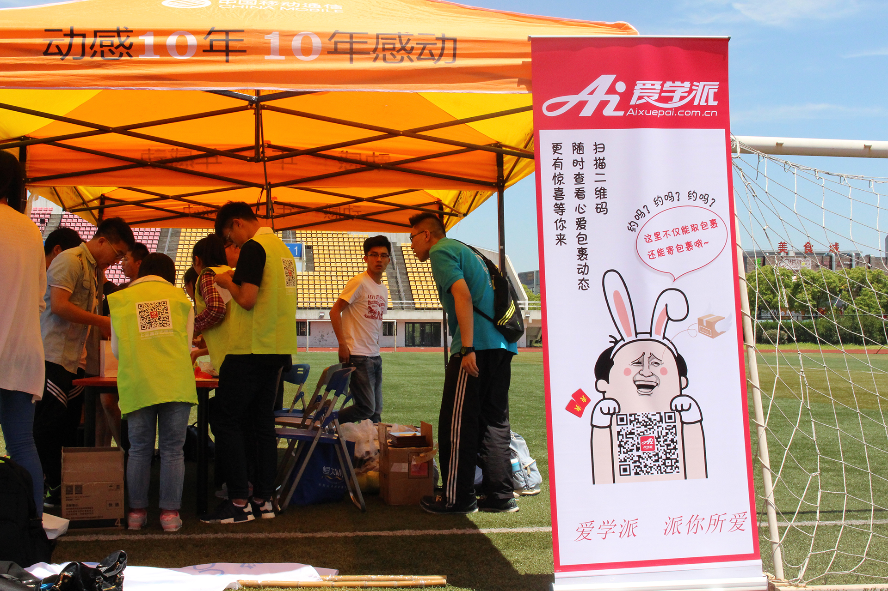

爱学派携手海洋大学举办环校跑，助力校园公益
随着生活习惯和饮食结构的改变，越来越多的大学生更倾向于室内活动、快餐速食，2016年最新大学生调研数据报告显示，45%以上的大学生体脂偏高，80%以上的大学生每周室外运动时间低于1小时，针对此现象，国务院在5月份出台了《确保学生每天锻炼一小时》意见书，而校方和很多热心于公益的企业也在密切关注着大学生的健康发展。

5月18日，爱学派与海洋大学共同举办了环校公益跑，此次活动，从定期的夜跑、小组比赛、一直持续到昨日的环校跑，不仅全校学生们积极参与，很多老师也都主动加入，带领学生们跑起来。从活动开始一直坚持到环校跑的同学都得到了证书和礼品，前三名同学更是从院长那里接过了荣誉证书和奖杯，爱学派和校方期望通过这种鼓励的形式不断地充实着同学们的热情，从而养成多进行户外锻炼的好习惯，拥有一个更加强健的体魄。
爱学派是一家校园快递服务品牌，通过与货源方合作和开展自己的直营门店两个维度出发，直接打通上游货源方和下游学生用户，将二者紧密相连，并通过爱学派app解决了物流公司在群发短信和签收统计上的难题，同时也解决校园物流环境混乱、校园快递车辆安全隐患等问题。在校园这个可爱又特殊的群体面前，爱学派一直保持着赤子之心，不仅在包裹快递袋上加入了回收环节，时刻输出着爱护环境的理念，更是在校园安全上保持着高度的服务态度，此次公益跑，爱学派和海洋大学校方达成了高度的认同，对于学生们的身心健康，爱学派也一直在努力的贡献着一份微薄之力，我们更想通过自己一小步的努力，来为校园、为学生做一些贡献，虽然传统观念里企业更看重盈利，而我们爱学派更看重自己为校园、为社会做了什么。